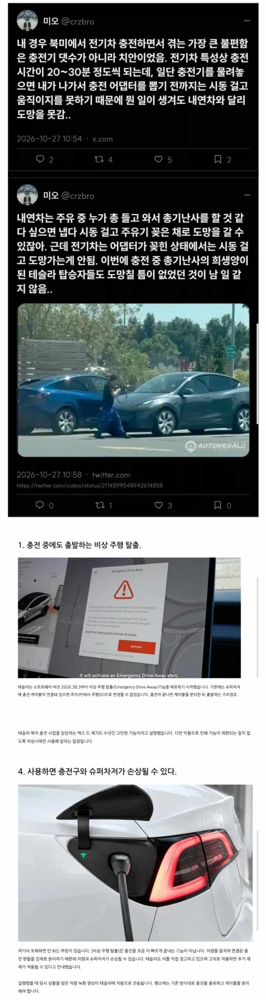

생각도 못 했던 단점이네

생각도 못 했던 단점이네
기다리는동안 한발빼면 되는걸
충전중 총맞을 걱정을 하는나라 ㅋㅋ
그정도는 아니여 ㅋㅋ
근데 덩치 큰 사람 상대할땐 총만한게 없음ㅋㅋ
총앞에서는 만인이 평등하기때문에
그나마 나같은 쥐좆만한 동양인이 가족을 지킬수있는 방법이긴함 땅덩어리가 존나커서 한국처럼 경찰 대응이 빨리안되서 ㅋㅋ
나도 총반대했는데 가족 생긴뒤로는 샷건까지 구비함..ㅋㅋ
권총도 아니고 소총이네ㅋㅋ
충박꼼
각각 방탄부스라도 설치해줘야되나
마차강도의 나라
센트리건 구독제 ㄱㄱ
이제 전기차 소유자들은 총기 소지하도록 바뀌겠네.
우리나라는 적용되지 않는 단점;
내가 머스크였으면 방탄옵션 판매했다
우리나라에선 상상도 못 할 단점이네
미국에서 전기차 알아보는중이었는데 걍 내연기관 가야겠다 ㅅㅂㅋㅋ
전기차 안에 총을 보관하는 보관함을 만들어놔서 차안에서 공격할수있게하는건 어떰
에반게리온 참고하길 ㅋㅋㅋ
우리나라 진짜 평화로운 나라긴 하다..
버튼 누르면 분리되는 그런거 있으면 좋겠다